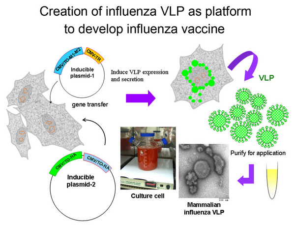

分子疫苗科技研究
「分子疫苗科技研究專題中心」的研究目標為利用先進的分子生物方法發展疫苗用來對抗動物與人類的傳染病。本中心已經研究過的病原主要計有口蹄疫病毒、豬第二型環狀病毒（PCV2）豬生殖和呼吸道症候群病毒（PRRSV）、 SARS 冠狀病毒、流行性感冒病毒等。我們已成功研發出口蹄疫的 DNA 疫苗與次單元疫苗 ( 包含重組鞘蛋白 VP1 和利用植物病毒表現 VP1 抗原表位 ) 來防禦口蹄疫，近來更利用類病毒顆粒（Virus-like Particle 簡 稱 VLP）研發 SARS、口蹄疫與流感疫苗。 Toll 樣受體（TLR）是初始先天免疫反應和後天免疫反應發展的重要介質，我們以基因組學和蛋白組學的方法來研究 TLR9 傳導途徑，利用 TLR9 配體刺激人類和豬的免疫細胞及神經細胞，發現幾個新分子會影響免疫反應。也利用細胞實驗篩選到新的 Toll 樣受體激動劑，並且從細菌生物膜，病毒蛋白和草本植物找到新的 TLR2 激動劑。目前正在評估這些 TLR 激動劑作為疫苗佐劑的可能潛在用途。我們也在評估如何應用某些藥用植物之多 醣體來作為先進疫苗 ( 如 DC-based ) 之佐劑。 本中心將繼續研究先進的疫苗科技，會包括但不限於 VLP 科技、新的疫苗傳遞系統、新的免疫佐劑等，我們會特別針對人、禽流感病毒來設計 VLP 為主的疫苗，以強化細胞介導的免疫能力。為挹注台灣未來疫苗生技的發展，我們會聚焦於解決研究技術的瓶頸，將實驗室得到的見解轉化成臨床試驗、農業家畜試驗，使其所有衍生的關鏈技術及產品能成功上市。
